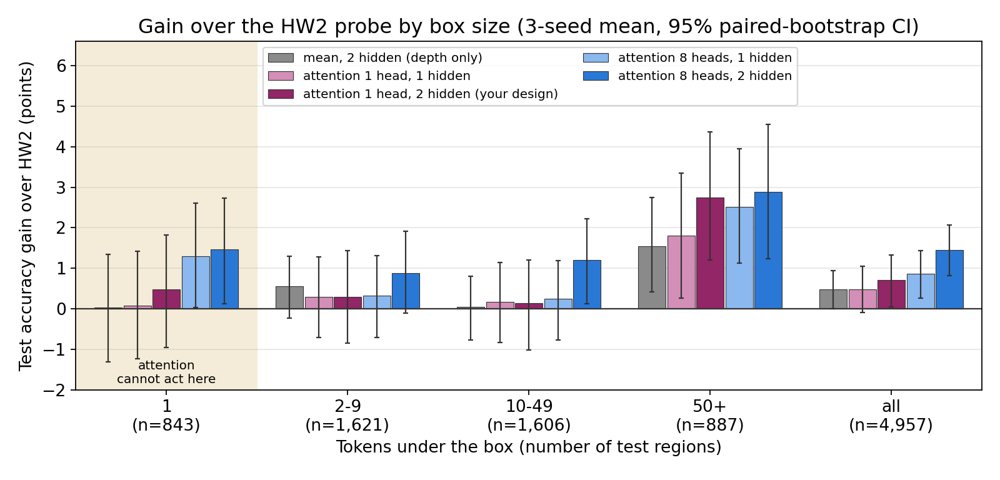

The probe names the content of an image region from Qwen2.5-VL-7B's hidden state 21. The data are 50,000 Visual Genome regions in 20 semantic categories, 2,500 each, split by image into 39,968 / 5,075 / 4,957 train / validation / test. The HW2 baseline averages the L tokens under the box and classifies the 3,584-number mean with an MLP 3584 → 512 → ReLU → 20. It scores 73.62 ± 0.38% test accuracy over 3 seeds here. Its weakest category is person, at 50% recall.
Design (the author's). A learned query scores each token under the box, and a softmax over the box turns the scores into pooling weights. A second hidden layer follows: 3584 → 512 → ReLU → 512 → ReLU → 20. The queries start at zero, so training starts from the exact HW2 mean pool.
Hypothesis. The mean gives background tokens the same weight as object tokens. Learned weights should up-weight the object and help most where a box mixes several kinds of content, such as a person box that shows mostly a shirt.
Predictions (docs/hw3/hypothesis.md, commit c03e240, 15:02; first result 15:37):
(1) attention changes nothing on one-token boxes; (2) gains appear for boxes of 10+ tokens and grow with size; (3) person, limb and clothing gain the most; (4) a second hidden layer on the mean adds overfitting, not accuracy; (5) 8 heads do at least as well as 1 head.
Six arms cross pooling with depth: {mean, attention with 1 head, attention with 8 heads} × {1, 2 hidden layers}. Each of the 8 heads pools its own 448-number slice of the vector. The proposed design is "attention 1 head, 2 hidden". All arms share one budget: Adam over learning rate {3e-4, 1e-3} × weight decay {1e-4, 1e-3}, batch 256, dropout 0.5, early stopping on validation loss with patience 5. Each arm keeps its best setting on validation accuracy and reruns it with 3 seeds. The test set is scored only for that setting. The 1-hidden arms all selected lr 3e-4 and weight decay 1e-3; at 2 hidden, the mean arm selected 1e-4 and the attention arms 1e-3. Effects are paired bootstraps over test regions on seed-averaged correctness. These 95% intervals cover test sampling, not training-seed variance. One-token boxes act as a placebo: attention returns the token itself there, so pooling cannot cause a change on those 843 test boxes.
| Arm | Test acc | Train | s/ep | Params |
|---|---|---|---|---|
| mean, 1 hidden (HW2) | 73.62 ± 0.38 | 82.4 | 0.09 | 1.85 M |
| mean, 2 hidden | 74.10 ± 0.21 | 86.4 | 0.21 | 2.11 M |
| attn 1 head, 1 hidden | 74.10 ± 0.15 | 83.7 | 0.77 | 2.08 M |
| attn 1 head, 2 hidden (proposed) | 74.33 ± 0.08 | 83.9 | 0.69 | 2.34 M |
| attn 8 heads, 1 hidden | 74.48 ± 0.17 | 88.1 | 1.09 | 3.68 M |
| attn 8 heads, 2 hidden | 75.07 ± 0.25 | 83.1 | 1.23 | 3.94 M |
| Contrast (points) | Gap | 95% CI |
|---|---|---|
| proposed vs HW2 | +0.71 | [+0.05, +1.32] |
| depth only (mean 2 vs 1 hidden) | +0.48 | [+0.01, +0.95] |
| 1-head attn vs mean, 2 hidden | +0.24 | [−0.40, +0.80] |
| 8-head attn vs mean, 1 hidden | +0.86 | [+0.26, +1.43] |
| 8-head attn vs mean, 2 hidden | +0.97 | [+0.40, +1.52] |
| 8 vs 1 head, 2 hidden | +0.73 | [+0.24, +1.23] |
| best arm vs HW2 | +1.45 | [+0.82, +2.06] |
The proposed design beats HW2 by 0.71 points, and its second hidden layer carries most of that gain. Depth alone adds 0.48 points. One-head attention on top of the same depth adds 0.24 points, an interval that includes zero. Eight heads beat the mean pool at both depths, and the best arm reaches 75.07%. Attention costs 3 to 12 times more time per epoch than the mean at the same depth, about 1.6 GB more GPU memory, and an 11.1 GB token store.

Figure 1. The 8-head arms gain on one-token boxes, where attention cannot act, about as much as on all multi-token boxes combined. Bars show test-accuracy gain over HW2 within each box-size bin, 3-seed mean, 95% paired-bootstrap CI.
| Prediction | Observation | Verdict |
|---|---|---|
| 1. No change on one-token boxes | 1 head, 1 hidden: +0.08 [−1.23, +1.42]. 8 heads, 1 hidden, at HW2's depth: +1.30 [+0.04, +2.61], more than its +0.77 [+0.17, +1.39] on all larger boxes combined. | Holds for 1 head; contradicted for 8 heads (borderline) |
| 2. Gains for 10+ tokens, growing with size | 10–49 tokens: +0.25 or less, except 8 heads with 2 hidden (+1.20). 50+ tokens: attention +1.8 to +2.9, but depth alone also +1.54 [+0.41, +2.74]. | Partly; not specific to attention |
| 3. Person, limb, clothing gain most | Person: −2.3 [−5.9, +1.2] for the proposed design, −0.3 for the best arm. Clothing: +3.2 and +6.8 in the 2-hidden attention arms. Largest steady gains: window and door, street and road, furniture. | Not supported for person; partly for clothing |
| 4. Second layer adds overfitting, not accuracy | Train accuracy 86.4% against 82.4%, and test +0.48 [+0.01, +0.95]. | Partly refuted |
| 5. 8 heads ≥ 1 head | +0.38 [−0.15, +0.89] at 1 hidden; +0.73 [+0.24, +1.23] at 2 hidden. | Supported |
| Failure mode named in advance | Measurement | Outcome |
|---|---|---|
| Attention never leaves the mean pool | Normalized entropy on test, 1 = uniform: 0.95 / 0.92 (1 head, 1 / 2 hidden), 0.93 / 0.90 (8 heads). The top token gets 2.0 to 2.9× the uniform weight. Validation entropy falls during training, e.g. 0.99 → 0.86. | Did not occur; weights stay diffuse |
| Position lock on the first token | The first token is the top token in 15–18% of boxes, against 13–14% by chance. | Weak at most |
| Overfitting from more parameters | Train minus validation accuracy: 9.4 points for HW2, 13.3 for 8 heads with 1 hidden, 8.1 for 8 heads with 2 hidden. Early stopping picks epochs 4 to 19. | Larger gap in one arm; held back by early stopping |
| Weight decay shrinks queries; outlier tokens; fixed input scaling | Not measured. All four attention arms selected the larger weight decay, 1e-3. | Not tested |
The experiment found one failure mode that was not named in advance: part of the 8-head gain appears where attention cannot act. The 8-head arms gain on one-token boxes, where their input equals HW2's. The lower bound of +0.04 is borderline, as one of about 30 box-size contrasts. Two hypotheses can explain this. First, training the shared MLP on attention-pooled vectors may change what it learns for every input. Second, seed variance, which the intervals leave out, may account for it; HW2's own seeds span 73.09% to 73.90%. The data cannot yet separate the two.
The proposed design improves test accuracy by 0.71 points over HW2, mostly through its second hidden layer. One-head attention adds no measurable gain overall, and it does not fix person recall, the failure that motivated it. At HW2's depth, though, one head shows the predicted pattern: +0.08 [−1.23, +1.42] on one-token boxes and +1.80 [+0.26, +3.34] on boxes of 50+ tokens. Depth alone shows a similar size pattern. Eight heads add about 1 point, but the one-token placebo shows that part of this gain cannot come from re-weighting tokens. The next test (not run) re-scores each trained attention probe with its weights forced to uniform. That change keeps the MLP fixed and isolates the pooling. Training with more seeds would put seed variance into the intervals.